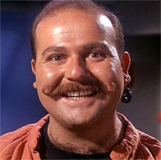
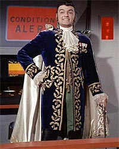
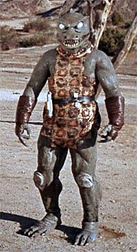
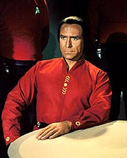
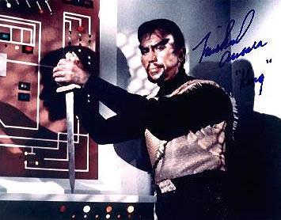

|
Aqueles
que Adoramos Odiar
 O que seria de uma srie de TV dos anos 60 sem um divertido vilo?
Jornada nas Estrelas no exceo regra e contou com diversas mentes diablicas semanais tentando destruir a Enterprise ou escravizar sua tripulao. O que seria de uma srie de TV dos anos 60 sem um divertido vilo?
Jornada nas Estrelas no exceo regra e contou com diversas mentes diablicas semanais tentando destruir a Enterprise ou escravizar sua tripulao.
Salvo Deep Space Nine, nenhuma srie posterior de Jornada nas Estrelas trouxe viles habituais memorveis.
Em A Nova Gerao tivemos Q (magnfico personagem, mas que dificilmente poderamos chamar de vilo no sentido estrito da palavra), o Romulano Tomalak (que apareceu em apenas trs episdios), Sela (em apenas cinco episdios) e o Ferengi DaiMon Bok (em dois episdios). Em
Voyager tivemos a fraca Seska, alguns Kazons sem graa, a Rainha Borg e seus Borgs descaracterizados, e Q (de novo), nenhum deles com aparies marcantes.
Enterprise segue o caminho dos viles sem graa, com o "carinha do futuro" e Silik, o Suliban afetado.
Deep Space Nine, por outro lado, se valeu de grandes viles como Dukat, a fmea metamorfa, Weyoun, Kai Winn e Eddington.
Na Srie Clssica no tivemos viles habituais que eventualmente retornavam para colocar a Enterprise em perigo (com uma exceo), mas tivemos viles memorveis de uma nica apario.
Vamos, sem mais delongas, dar uma olhada numa seleo de episdios onde figuraram viles de toda sorte, desde os campees aos realmente esquecveis.
"Where No Man Has Gone Before"
Gary Mitchell iniciou a frmula que seria repetida vrias outras vezes durante a
Srie Clssica e at nas produes posteriores: a figura do vilo com poderes sobre-humanos, quase um Deus. Esse tipo de vilo voltaria em
"Charlie X", "Who Mourns of Adonais", "The Squire of Gothos" etc.
Mitchell foi um personagem marcante e, mesmo se restringindo a um nico episdio, certamente os fs no se esquecero dele. Amigo do capito Kirk, aps um acidente atingido por uma espcie de radiao e adquire superpoderes; como o poder absoluto corrompe absolutamente, logo a tripulao da Enterprise se v ameaada.
O conflito de conscincia de Kirk interessante aqui; por um lado ele quer preservar a vida de seu amigo e por outro entende a necessidade urgente de destru-lo antes que Mitchell destrua sua tripulao.
Esse episdio fez excelente uso de efeitos especiais e truques de montagem. Um efeito simples e muito bem bolado foi na cena em que Mitchell est preso e, com a fora do pensamento, controla um cabo para enforcar um dos seguranas que protegem a cela. A sobreposio das imagens de Michell sobre as cenas do assassinato mostra o poder do personagem e a frieza com que comanda suas aes. O uso de lentes de contato esbranquiadas com certo brilho metlico ressaltam a natureza sobrenatural do personagem.
"Mudds Women"
A frmula deveria ser a seguinte: quanto mais exagerado e canastro o ator, mais divertido seria o vilo. Mas no foi o que funcionou nesse episdio.
 Harry Mudd um comerciante de mulheres escravas e sua nave salva da destruio pela Enterprise. Agora a bordo, Mudd usa sua carga para distrair a tripulao para obter seus gananciosos objetivos.
Mudd, interpretado pelo pssimo Roger C. Carmel, uma figura pattica; uma espcie de comerciante com roupagem de cigano que no deixa de se utilizar de artifcios e fraudes para obter seus desgnios. Longe de parecer uma ameaa Enterprise.
difcil de se imaginar que o roteiro desse episdio foi uma das opes apresentadas por Gene Roddenberry NBC para a produo do segundo piloto da Srie Clssica. Embora possua boas intenes, como a referncia a drogas e seus nocivos efeitos fsicos e psicolgicos, essa parte da trama pouco explorada, dando lugar a inmeras cenas das mulheres de Mudd desfilando pelos corredores da Enterprise. O resultado final um episdio simplrio, com pretenses que no vingam no decorrer da histria.
"Where no Man Has Gone Before" foi a sbia deciso para o segundo piloto.
Infelizmente Mudd voltaria a assombrar a Enterprise no igualmente ruim
"I, Mudd", do segundo ano, e at mesmo em um episdio da
Srie Animada chamado "Mudds Passion" -- o que deu ao personagem o status nico de vilo recorrente da srie.
"Charlie X"
Esse episdio tentou traar alguns parmetros em semelhana com
"Where No Man Has Gone Before", mas falhou em diversas reas.
Aqui a Enterprise encontra um adolescente, Charlie, nico sobrevivente de um acidente com a nave onde estava sua famlia. Ele foi salvo e criado por seres aliengenas que deram-lhe poderes sobre-humanos para poder sobreviver. Logo ele passar a usar seus poderes contra a tripulao da Enterprise e, de novo, Kirk se v na dvida de como resolver a situao.
O problema aqui que Charlie um chato e o episdio chato. Ao contrrio de Mitchell, Charlie no tem o mnimo de carisma para segurar o episdio na figura de um vilo ameaador. Suas caretas ao usar seus poderes podem causar risos involuntrios na audincia. O melhor momento do episdio o tapa que Kirk d na cara do Charlie.
Ao final temos a interferncia dos seres superiores que criaram Charlie. O uso dessas interferncias divinas de ltima hora tambm se tornou um elemento corriqueiro na srie, sendo usado, por exemplo, em
"Errand of Mercy" e "The Squire of Gothos".
"Balance of Terror"
Episdio histrico na srie por introduzir os Romulanos.
Mark Lenard, que interpretou posteriormente Sarek, faz aqui o papel do capito da nave Romulana. Ele no exatamente um vilo, mas sim o lado que representa a oposio aos interesses da Enterprise. Cada comandante tem suas ordens e tenta cumpri-la da melhor maneira possvel. O capito Romulano ordenado a destruir uma base da Federao na fronteira da Zona Neutra. Contrariado, sabe que tal ao ensejar resposta da Federao e uma possvel (e indesejada) guerra. Kirk, ao constatar a destruio da Base. ordenado a caar e destruir a nave inimiga antes que entre em espao Romulano.
O interessante aqui o confronto psicolgico entre Kirk e o capito Romulano, cada um tentando prever a prxima jogada de seu oponente e ultrapass-lo. Trata-se de um jogo de gato e rato, ainda mais elaborado pelo fato de a nave Romulana contar com capacidade de camuflagem, o que a torna invisvel aos olhos da Enterprise. No final, a destruio da nave inimiga deixa de ser o objetivo principal dos dois capites, dando lugar luta pela sobrevivncia.
O melhor momento a frase final do capito Romulano, que sintetiza a mensagem do episdio: "Em outra realidade, poderamos ter sido amigos".
"Dagger of Mind"
Esse episdio iniciou o ciclo dos viles loucos e megalomanacos. Aqui temos a figura do dr. Tristan Adams, diretor de uma colnia penal, que a transformou em uma cmera de horrores com o uso de um instrumento chamado "Neutralizador Neural" para domesticar seus pacientes.
Adams um personagem diablico, mas no representou um vilo marcante. Sua importncia reside no fato de ter servido de molde para futuros viles em episdios como
"The Omega Glory", "Whom Gods Destroy", "The Way to Eden" e outros.
"The Squire of Gothos"
 Trelane sem dvida um personagem divertido e serviu como base para a criao de Q em
A Nova Gerao. Ambos compartilham muitas semelhanas, como o interesse em estudar a humanidade enquanto se divertem s custas dos pobres mortais na Enterprise.
Trelane um ser avanado, com poderes sobre-humanos e um interesse notvel pela histria da Terra. Mas Kirk, Spock e McCoy logo descobriro que Trelane no passa de uma criana mimada e que pretende escraviz-los para sua diverso.
O episdio bem simples e funciona como uma leve diverso sem grandes pretenses. Funciona perfeitamente, graas ao clima descontrado de todo o elenco, que certamente se divertiu muito durante as filmagens.
O ator William Campbell faz aqui sua primeira apario na Srie Clssica, retornando no segundo ano no papel do Klingon Koloth em
"The Trouble with Tribbles".
"Arena"
Um dos grandes oponentes do Capito Kirk, o Gorn.
Arena um exemplo de episdio tpico da Srie Clssica. Seres com poderes sobre-humanos interferem na batalha entre a Enterprise e a nave Gorn e colocam seus respectivos comandantes em um deserto californiano (cenrio regular na srie) para lutarem at a morte.
 O Gorn uma criatura misto de humano com jacar, com uma fantasia risvel que serve para tornar a diverso ainda maior. So impagveis as cenas de luta corporal entre Kirk e o Gorn.
O final do episdio passa uma bela mensagem de paz, tambm tpica da srie e que seria utilizada de forma semelhante em
"Errand of Mercy".
Os fs at os dias de hoje esperam ansiosos por uma nova apario dos Gorns. Tudo indica que eles mostraro a cara em algum futuro episdio de
Enterprise.
"Return of the Archons"
Aqui temos tambm outro episdio que iniciou uma frmula consagrada na srie: Kirk vs. Computador.
Nesse episdio a Enterprise visita o Planeta Beta III, onde seus habitantes so dominados mentalmente por um lder chamado Landru, que no passa de um computador criado sculos atrs para cuidar da populao do planeta.
Landru no tem por assim digamos uma personalidade forte para constar no rol dos grandes viles da srie, mas no deixa de ser uma figura importante por ser o primeiro de muitos computadores que tentaram subjugar a tripulao da Enterprise.
Essa frmula foi repetida em: "The Apple", "I,
Mudd", "The Ultimate Computer" e "For the World is Hollow and I Have Touched the
Sky".
"Space Seed"
Khan! O vilo mais famoso da srie, trazido vida com vigor e fora pelo canastrssimo Ricardo Montalban.
Khan humano geneticamente avanado, criado no sculo 20 -- nos anos 90 (!) pela cronologia da srie -- com elevadssima inteligncia e fora descomunal. Sentenciado a priso perptua, ele e outros super-humanos foram colocados em animao suspensa e lanados ao espao dentro de uma nave-presdio, a Botany Bay. No sculo 23, a Enterprise encontra a nave, reanimando Khan e sofrendo as conseqncias.
Khan se tornou o vilo mais famoso tambm pelo fato de voltar no segundo filme da srie para o cinema,
"A Ira de Khan". Com esse filme Khan definitivamente se consagrou com o melhor vilo de toda a srie. Ricardo Montalban deita e rola no filme, roubando todas as cenas em que aparece.
 No episdio
"Space Seed" temos um Khan um tanto diferente daquele que vemos no segundo filme. Aqui ele uma espcie de guerreiro, um dominador, um personagem que busca o poder acima de tudo. No segundo filme ele um personagem enlouquecido, com sede de vingana, cujo nico objetivo matar Kirk. Foi do prprio Moltalban a opo de dar um enfoque diferente ao personagem no segundo filme, o que serviu para construir melhor sua personalidade, dando maior riqueza a Khan.
Dificilmente teremos outro grande vilo a altura de Khan na franquia. O general Chang, no sexto filme, pelo menos chegou bem perto. Entretanto, Shinzon, do dcimo filme,
"Nmesis", fracassou como vilo por tentar ser uma cpia descarada de Khan. Ser que to difcil inovar em vez de copiar? Talvez seja apenas preguia mesmo, ou descaso.
"Errand of Mercy"
Esse episdio foi o primeiro a mostrar os Klingons, que seriam usados como inimigos da Federao em mais dois episdios e em quatro filmes da srie do cinema.
O vilo aqui Kor, comandante da tropa Klingon que ocupa o pacfico planeta Organia. O ator que o interpreta, John Colicos, certamente se divertiu muito. Kor no um vilo que causa repulsa na audincia, mas sim um divertido personagem, com direito a inmeras caretas, cujo objetivo mostrar que melhor do que Kirk.
Em um emocionante episdio de DS9, chamado, "Blood
Oath", tivemos a reunio dos trs comandantes Klingons que mostraram as caras na
Srie Clssica: Kor, Koloth e Kang. Kor voltou a aparecer em mais alguns episdios
de DS9, sempre com a interpretao divertida de Colicos.
"Wolf in the Fold"
Ento "Jack, O Estripador" era uma entidade aliengena malvola que visitou a Terra no passado, espalhou sangue e vtimas, conseguiu escapar, espalhou terror pela galxia e agora aterroriza a tripulao da Enterprise. Como algum poderia imaginar que um roteiro desses funcionaria perfeitamente e renderia um dos bons episdios da srie? H boas doses de suspense para prender a ateno pelos 51 minutos do episdio.
A entidade perversa atende pelo nome de Redjac. Inicialmente no episdio a entidade comandava o corpo do personagem Hengist. Aps deixar seu corpo e, passando a ser despersonificada, sua presena consiste apenas em uma voz ameaadora. O efeito muito eficaz.
Criatura semelhante seria novamente utilizada em "The Day of the
Dove", do terceiro ano.
"Mirror, Mirror"
Mais um clssico episdio onde Kirk, McCoy, Uhura e Scotty, aps um acidente no teletransporte, chegam a um universo paralelo onde os papis de heris e viles so invertidos. A Federao maligna e a tripulao da Enterprise mais terrvel que os nazistas.
A figura alternativa de Spock a maior atrao desse episdio. Usando barba e com personalidade mais fria e calculista, constatamos ao final que esse Spock no to diferente do Spock do nosso universo. Ambos so comandados pela lgica e baseiam suas aes dentro das circunstncias em que vivem. O Spock alternativo tem conscincia plena de que o Imprio (Federao maligna) vai eventualmente cair no futuro, mas isso no o impede de continuar nela servindo porque ela faz parte de seu ambiente, de sua realidade. No final, Kirk convence o Spock alternativo a olhar de forma diferente o mundo ao seu redor, mostrando que ilgico servir a um sistema maligno e sem futuro.
A histria do universo paralelo continuaria durante a srie Deep Space
Nine, rendendo timos episdios.
"The Day of the Dove"
Aqui temos a terceira apario dos Klingons na Srie Clssica. No foi exatamente a ltima, pois tivemos a breve apario do personagem Kahless no antepenltimo episdio da srie,
"The Savage Curtain".
Esse episdio traz elementos de "Wolf in the Fold" na figura de uma entidade diablica que se alimenta de instintos agressivos, brincando com a mente da tripulao da Enterprise e dos Klingons e jogando-os uns contra os outros. Para tornar a atrao ainda mais sanguinria, a entidade transforma todas as armas da nave em espadas, machados e facas. E que comecem os duelos.
Mas o elemento importante nesse episdio a presena de Kang, interpretado com gosto por Michael Ansara. Kang fechou o trio de comandantes Klingons que apareceram na
Srie Clssica, junto com Kor e Koloth, e que retornaram em uma grande apario em
"Blood Oath", de DS9.

Kang fez tambm uma breve apario no episdio de
Voyager "Flashback", que cometeu vrios erros de continuidade com a
Srie Clssica em plena comemorao dos seus 30 anos. Se quisermos uma homenagem digna, temos de recorrer ao magnfico
"Trials and Tribble-ations", de DS9.
Fechando a conta
Grandes viles garantem uma importante poro da diverso no decorrer da srie. A histria da TV mostra que todas as grandes sries j produzidas tinham como destaque o arquiinimigo semanal: "Perdidos no Espao", "Viagem ao Fundo do Mar" e mais notadamente "Batman", entre outros.
Como j mencionado, de todas as sries posteriores de Jornada nas
Estrelas, apenas DS9 acertou nesse ingrediente indispensvel para uma boa srie. Ainda h algumas chances (bem poucas) de a srie
Enterprise se achar e trilhar o caminho correto; para tanto, umas das principais providncias que os produtores devem tomar urgentemente descartar os pssimos viles j criados e partir para outros com maior potencial, como os Gorns, os Tholianos e os mal-utilizados (at agora) Klingons.
Luiz
Felipe do Vale Tavares f de Jornada, DVDs e fico
cientfica e escreve sobre Srie Clssica para o Trek
Brasilis
|